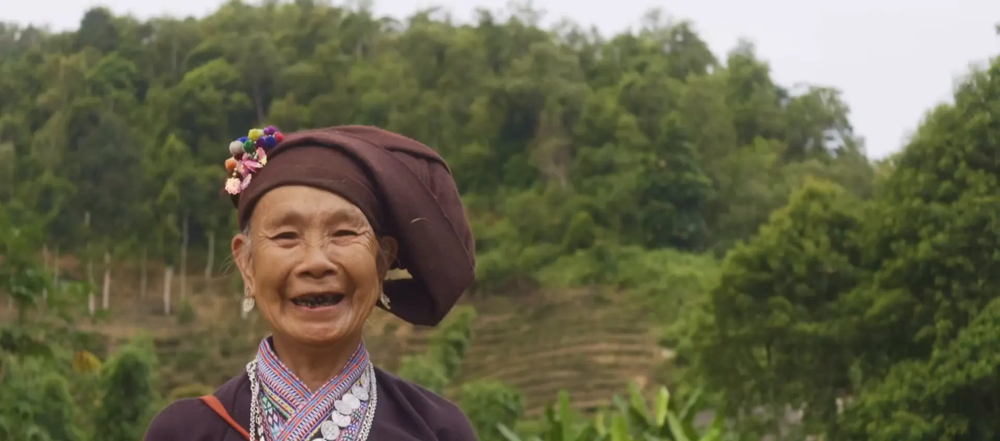
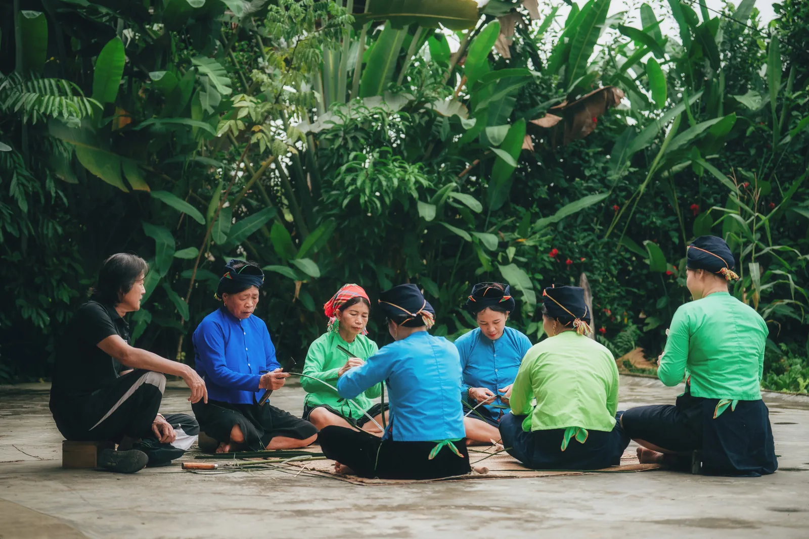
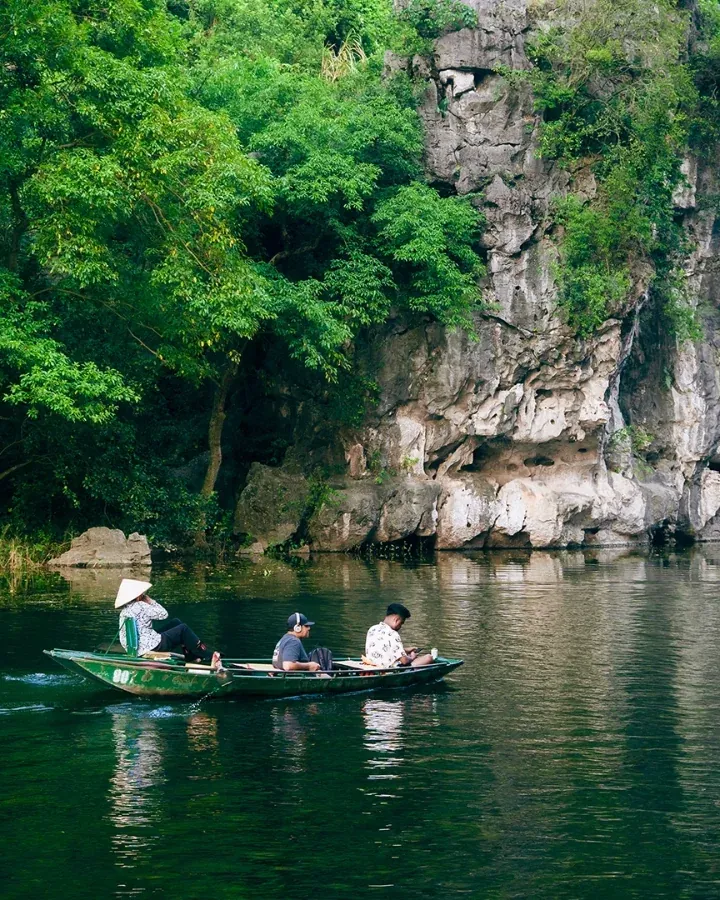
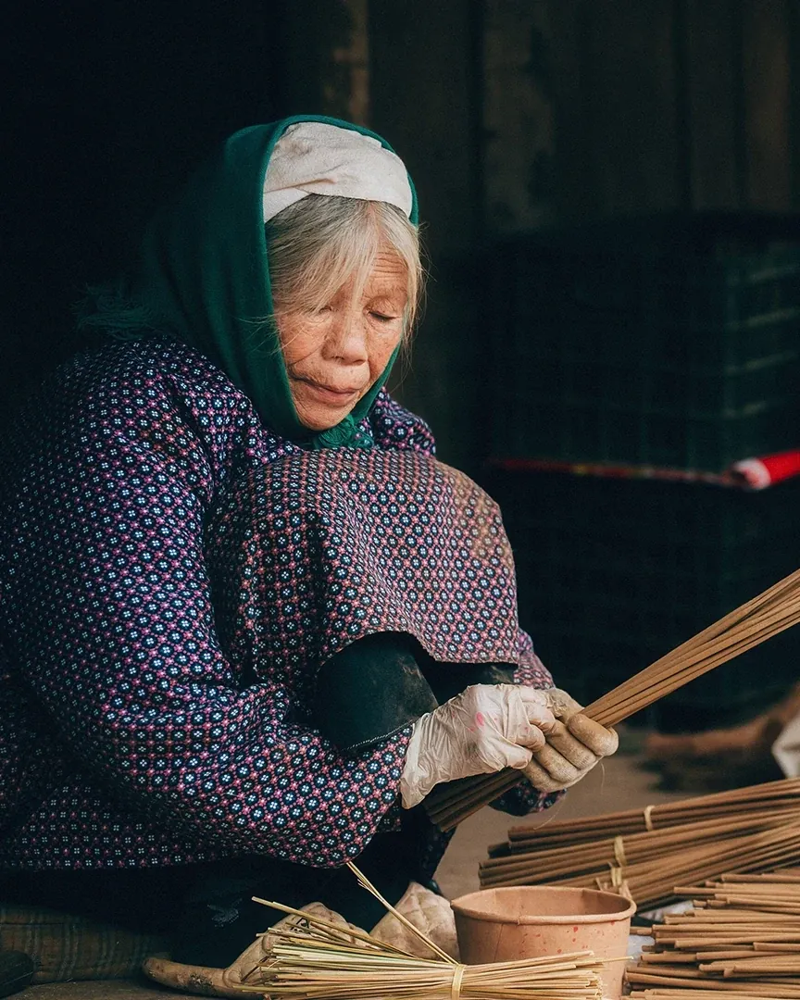
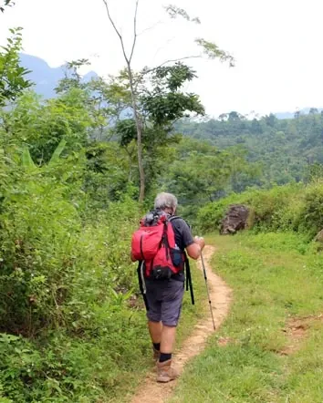
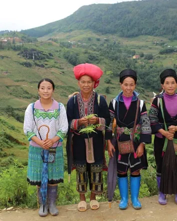
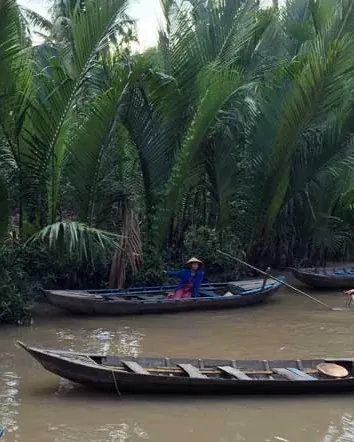

Voyages privés · Vietnam, Laos & Cambodge
Le Vietnam,
en profondeur.
Des voyages sur mesure, dans le confort et au rythme des rencontres.
Agence de voyage au Vietnam
Authentik Vietnam, agence locale francophone
Une agence locale basée à Hanoï et à Saïgon, fondée en 2012 par deux guides francophones : Ngoc Tu Dinh et Van Truong Tran.
Avec notre équipe, vous créez un voyage privé et sur mesure au Vietnam, au Laos ou au Cambodge, loin du tourisme de masse.

- 2012Fondée à Hanoï
- Hanoï · SaïgonDeux bureaux au Vietnam
- AgrééeLicence de tour-opérateur international
- 3 paysVietnam · Laos · Cambodge
Instants
Ce qui reste, après le voyage.
Une lumière, un geste, un regard. Le Vietnam que nous aimons partager.
Deux façons de voyager
À votre rythme, ou en petit comité ?
Un voyage privé, rien que pour vous. Ou un petit groupe, avec la même attention.

Par envie
Quel Vietnam aimeriez-vous rencontrer ?
Six façons de découvrir le pays. Choisissez celle qui vous ressemble.

IncontournablesLes grands sites, autrement
Vietnam authentiqueLa vie des villages Richesses ethniquesLes peuples des montagnes
RandonnéeAu fil des sentiers Côté plageEntre mer et repos Vietnam · Laos · CambodgeD’un pays à l’autreItinéraires
Quelques itinéraires pour vous inspirer

Circuit privé15jours Hanoi · Sapa · Bac Ha · Van Long · Mékong Des rizières en terrasse jusqu’au Mékong Découvrir
Circuit privé19jours Sapa · Baie d’Halong · Van Long · Mékong Des sommets du Nord jusqu’au Mékong Découvrir Circuit privé21jours Sapa · Nord-Est · Halong · Hué · Hoi An · Mékong Aventure du Vietnam Découvrir Circuit privé10jours Hanoi · Halong · Hué · Hoi An · Saigon · Ben Tre Escapade au Vietnam Découvrir Circuit privé12jours Hanoi · Halong · Hué · Hoi An · Saigon · Can Tho Splendeurs du Vietnam Découvrir Circuit privé14jours Hanoi · Mai Chau · Halong · Hué · Hoi An · Mékong Traversée du Vietnam DécouvrirAvis voyageurs
Paroles de voyageurs
-
Tripadvisor
« Nous avons été séduits par la beauté du pays, la gentillesse de ses habitants et toutes les belles rencontres faites en chemin. »
Margali N.Novembre 2026
Lire l’avis -
Tripadvisor
« […] des guides francophones cultivés qui ont su nous transmettre l’histoire du pays. »
Marc R.Novembre 2026
Lire l’avis -
Trustpilot
« […] mon circuit dans le Nord Ouest du Vietnam était bien équilibré entre randonnée dans les montagnes et découverte des ethnies minoritaires. »
RenversezNovembre 2026
Lire l’avis -
Google
« Je remercie infiniment l’équipe d’Authentik Vietnam pour son professionnalisme ainsi que la gentillesse témoignée tout au long de notre séjour au Vietnam. »
Nathalie B.Septembre 2026
Lire l’avis
Réserver avec Authentik
Votre projet, pas à pas
Un conseiller francophone vous accompagne, du premier échange au retour.
- 01
Demande
Vous nous parlez de votre projet : formulaire, e-mail ou WhatsApp.
- 02
Échange
Votre conseiller répond sous 24 h et construit l’itinéraire avec vous.
- 03
Confirmation
Le programme vous plaît ? Vous le validez, nous réservons tout.
- 04
En voyage
Guides et chauffeurs vous accompagnent. Votre conseiller reste joignable.
Votre voyage
Parlons de vos envies.
- Réponse personnalisée sous 24 h
- Un conseiller francophone, du premier échange au retour
- Proposition gratuite et sans engagement
Merci
Votre demande est bien partie.
Un conseiller francophone vous écrit sous 24 h pour en parler avec vous. En attendant, laissez-vous inspirer par nos carnets de voyage.
Lire le blog